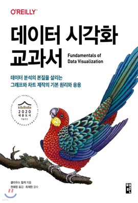

학습 목표
- 1. 데이터를 명확하게 전달하는 색상 및 기호화 원칙을 이해하고, 실무 문서나 보고서에서 정보 전달력을 높일 수 있다.
- 2. 주요 시각화 유형과 그 특성을 파악하여, 직무 목적에 맞는 적절한 그래프를 선택하고 구성할 수 있다.
- 3. 좋은 그래프와 잘못된 예시를 비교 분석함으로써, 실무에서 신뢰성과 설득력을 갖춘 시각화 자료를 제작할 수 있다.
교육 특징
-
1. 데이터 시각화의 숨은 기본 원리와 실전 지식 총정리!
현업에서 시각적 표현의 핵심 원리를 이해하고 실무 문서에 바로 적용할 수 있는 데이터 시각화의 내용 구성
-
2. 쉽고 명확하게 이해할 수 있는 데이터 시각화를 다룬 전문가의 영상!
핵심 개념을 쉽고 논리적으로 설명하며 학습자의 몰입을 이끌어내고, 다양한 시각화 예시와 함께 실전 응용 사례 제공
-
3. ‘데이터 시각화 교과서’ 도서 제공을 통한 학습 내용 복기
강사님의 ‘데이터 시각화 교과서’ 도서를 제공하여 복습의 기회 제공
교육 대상
- 1. 기업체 전 임직원
- 2. AI에 관심있는 학습자
- 3. 빅데이터와 데이터베이스에 관심있는 개발자 및 종사자
강의 목차
- 제1장 데이터 시각화란 무엇인가?
- 제2장 데이터와 시각적 속성
- 제3장 시각적 속성과 인지과학적 원리
- 제4장 다양한 데이터 시각화
- 제5장 그래프 디자인의 기본 원리
- 제6장 데이터 시각화의 응용
강사 소개
강사명
최재원
경력
현）아주대학교 교수학습개발센터 연구교수
학습분석(Learning Analytics) 및 AIED(Artificial Intelligence in Education) 연구
한국교육학술정보원(KERIS) AI디지털교과서 개발 전문가 워킹그룹 참여
HTHT 자격증 연수 프로그램 강사
제3회 HTHT 마스터클래스 한국디지털교육협회장상 수상
문화관광부장관표창 수상
인공지능(AI), 데이터 과학, 데이터 시각화에 관한 다수의 책을 저술 및 번역
학습분석(Learning Analytics) 및 AIED(Artificial Intelligence in Education) 연구
한국교육학술정보원(KERIS) AI디지털교과서 개발 전문가 워킹그룹 참여
HTHT 자격증 연수 프로그램 강사
제3회 HTHT 마스터클래스 한국디지털교육협회장상 수상
문화관광부장관표창 수상
인공지능(AI), 데이터 과학, 데이터 시각화에 관한 다수의 책을 저술 및 번역
참고 도서

도서명
데이터 시각화 교과서
저자명
클라우스 윌케
도서소개
이 책은 데이터 분석 결과를 정확하게 전달하는 데 초점을 맞추어, 정보 왜곡 없이 인지적 부담 없이 쉽고
명확하게 데이터를 전달하는 방법을 다룹니다. '그래프와 차트, 도표' 제작의 기본 원리와 실전 응용에 대해 자세히 설명하며, 정확하고 올바른 정보
전달에 관심 있는 모든 전문가와 직장인에게 유용한 지침서입니다.